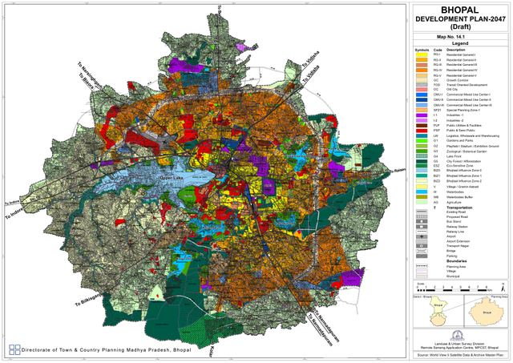
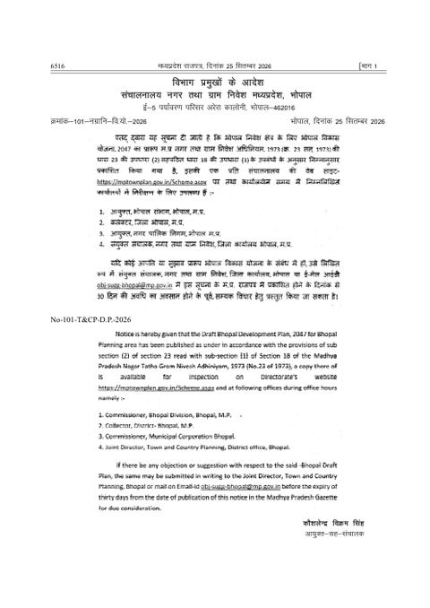
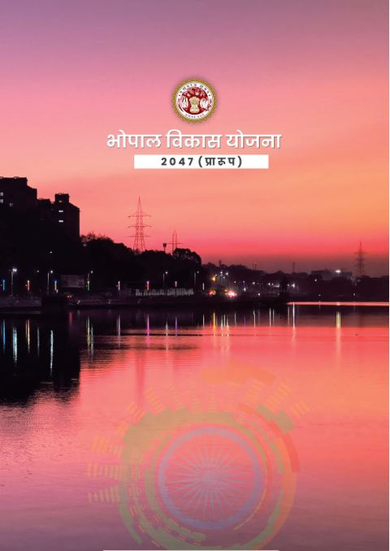
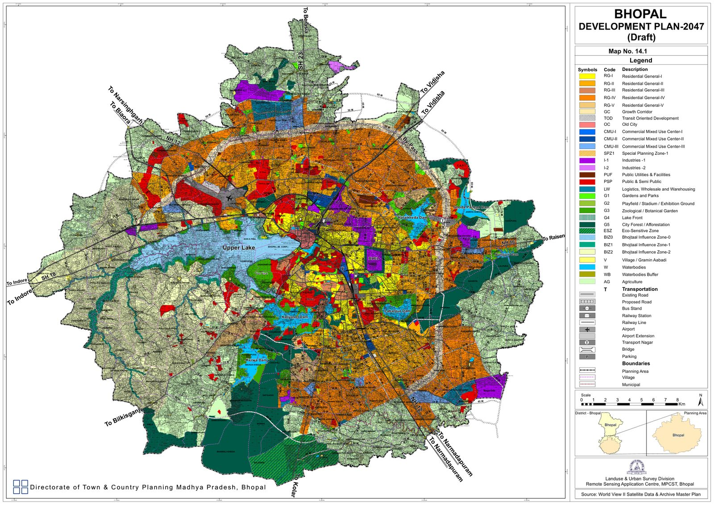

Download the Bhopal Master Plan 2047 PDFs
All three files are official documents released by the Directorate of Town & Country Planning, Madhya Pradesh. Each file is available at full original quality. The gazette and the booklet are very large, so we also offer a lite version that downloads quickly on mobile data. The land use map is a sharp vector file you can zoom right down to khasra numbers.

Proposed Land Use Map 2047 (Map No. 14.1)
The full planning area in colour-coded zones, with village boundaries, khasra numbers and proposed road widths. The text is searchable, so you can jump straight to your village.
- PDF · 1 sheet
- 23 MB
- English

Draft Bhopal Development Plan 2047 — MP Gazette
The complete draft as notified: existing conditions, population projections, transport, housing, environment, proposed land use and the development regulations that will govern FAR, setbacks and permitted uses.
- PDF · 259 pages
- Full: 276 MB · Lite: 25 MB
- Hindi
- Notification No. 101-T&CP-D.P.-2026

Bhopal Vikas Yojana 2047 (Praroop) — Key Highlights
The government's own six-page summary of the draft: the four guiding pillars and seventeen headline proposals, from the growth corridor to unlimited FAR.
- PDF · 6 pages
- Full: 106 MB · Lite: 2.3 MB
- Hindi
Source: Directorate of Town & Country Planning, Madhya Pradesh. The official copy is published at mptownplan.gov.in/Scheme.aspx and is available for inspection at the offices of the Commissioner Bhopal Division, the Collector Bhopal, the Commissioner Bhopal Municipal Corporation, and the Joint Director T&CP Bhopal. If anything here differs from the official copy, the official copy prevails.

What was published, and when
On 25 September 2026 the Directorate of Town & Country Planning issued notification No. 101-T&CP-D.P.-2026. It publishes the Draft Bhopal Development Plan 2047 under Section 18(1) read with Section 23(2) of the Madhya Pradesh Nagar Tatha Gram Nivesh Adhiniyam, 1973. The notice is signed by Kaushlendra Vikram Singh, Commissioner-cum-Director.
This is the first Bhopal draft to reach the public since the 2031 draft was scrapped in February 2024. For the long backstory of lapsed plans and cancelled drafts, read our explainer on where the Bhopal Master Plan 2047 stands.
For scale, the last notified plan, Bhopal Development Plan 2005, was published on 9 June 1995. It covered 601.06 sq km and 146 villages. The 2047 draft plans for a city roughly two-thirds larger by area.
The four pillars of the 2047 draft
The highlights booklet says the plan rests on four ideas:
- Conservation of the natural ecosystem, above all the Bhojtaal (Upper Lake) and its catchment, a Ramsar site.
- Reform-driven planning that simplifies rules instead of adding them.
- A modern, citizen-friendly approach to regulations and approvals.
- Self-sustaining growth that attracts investment and creates jobs.
17 headline proposals, in plain English
Growth and land use
- A 51 km growth corridor. It links the proposed EKAI City, the airport, the proposed CMU, the logistics and wholesale zone and several suburbs. About 3,000 hectares are earmarked under the corridor for high-density mixed-use development, with a BRTS line that can later be upgraded to MRTS. The foreword says the eastern bypass has been identified as this growth corridor, and a new green bypass is proposed.
- Unlimited FAR along the corridor and on wider roads. FAR is now set by road width. Plots on sufficiently wide roads are freed from FAR and height caps.
- Road-width-linked mixed land use. Following the state's TOD policy, residential land on wider roads can take mixed uses so work and home sit closer together.
- Transit Oriented Development zones where radial roads meet the growth corridor.
- EKAI City at Bhauri. The existing education hub is to become an Education, Knowledge and Artificial Intelligence city.
Rules for building
- Ground coverage limits removed. Setbacks (MOS) have been reworked so plots can be used more efficiently.
- Simpler development norms written to be understood by ordinary citizens, not just consultants.
- Creative redevelopment. Plot amalgamation and base-FAR relaxations encourage rebuilding in older areas. An RWA can redevelop a residential apartment block with 70% resident consent.
- Affordable housing incentives. Affordable projects are exempt from buying extra FAR. Rental housing for migrant residents also gets incentives.
- Parking reforms, including multilevel and mechanised parking, parking under open spaces and flyovers, RWA-managed paid street parking, and plot amalgamation for basement parking.
- Private developers can build plan roads, with land provided through government land or TDR.
Green, heritage and city management
- Green area of about 16.5%, above URDPFI guideline norms. A golf course is proposed to redevelop the Bhanpur khanti (old landfill).
- Colony open space raised from 10% to 12%, plus a further 2% for service areas.
- Green TDR and Heritage TDR compensate owners whose land falls in recreational or heritage zones.
- Revenue for implementation from premium FAR, use-conversion fees and conservation charges.
- Safe City provisions, including networking private CCTV in public spaces and transparent boundary walls on public buildings.
- A Digital Twin City for real-time monitoring of implementation and unauthorised construction.
Reading the land use map: what the colours mean
The map legend uses short codes. These are the ones most buyers and landowners will run into. The exact permitted uses, FAR and setbacks for each zone are set out in the development regulations inside the gazette.
| Code | Zone | What it signals |
|---|---|---|
| RG-I to RG-V | Residential General I–V | Residential land in five grades, generally reflecting density and location. |
| GC | Growth Corridor | The high-density mixed-use belt with the most liberal FAR. |
| TOD | Transit Oriented Development | Dense mixed use around transit nodes. |
| OC | Old City | The historic core, with its own rules. |
| CMU-I to III | Commercial Mixed Use Centres | Commercial and mixed-use hubs at three levels. |
| SPZ1 | Special Planning Zone-1 | An area with special planning provisions. |
| I-1, I-2 | Industries | Industrial land in two categories. |
| LW | Logistics, Wholesale & Warehousing | Freight, storage and wholesale trade. |
| PSP, PUF | Public & Semi-Public; Public Utilities & Facilities | Government, institutional and utility land. |
| G1 to G5 | Green categories | Parks, playfields, zoological and botanical gardens, lake fronts, and city forest. |
| ESZ | Eco-Sensitive Zone | Heavily restricted development. |
| BIZ0, BIZ1, BIZ2 | Bhojtaal Influence Zones 0–2 | Graded protection bands around the Upper Lake. Check these carefully if your land is near the lake. |
| W, WB | Waterbodies; Waterbodies Buffer | Lakes and ponds, and the no-build buffer around them. |
| V | Village / Gramin Aabadi | Existing village settlements. |
| AG | Agriculture | Land kept agricultural within the planning area. |
How to find your land on the map
- Download the land use map above. Open it in Adobe Acrobat Reader or a desktop browser. Phone viewers can struggle with a sheet this large.
- Press Ctrl+F and search your village name in capital letters, for example KOLUA, BHAURI or RATIBAD. The map text is searchable.
- Zoom in until khasra numbers appear. Find your survey number inside the village boundary.
- Match the colour against the legend on the right side of the sheet. Note the zone code and the width marked on the nearest proposed road, such as 18 M or 24 M.
- Look up that zone in the gazette's development regulations to see permitted uses, FAR and setbacks.
- Save a copy today. Draft maps get revised. The version you download now is your record of what was originally proposed for your land.
News reports talk about areas like Kolar or Ayodhya Bypass as a whole. Zoning on this map changes parcel by parcel. Two neighbouring khasras can fall in different zones, so always check your exact survey number.
How to file an objection or suggestion
Anyone can object to or suggest changes to the draft. The window is 30 days from the gazette date of 25 September 2026, which puts the deadline around 25 October 2026. Do not leave it to the last day.
- Write to the Joint Director, Town & Country Planning, District Office, Bhopal, or email obj-sugg-bhopal@mp.gov.in.
- Identify the land precisely. Give the village name, khasra number, area and your ownership details.
- State the current use and the proposed zone as shown on Map No. 14.1.
- Explain what you want changed and why. Stick to facts such as existing construction, approvals already granted, road access or errors in the base map.
- Attach supporting documents, such as the khasra copy, diversion order, building permission, or photographs.
- Keep proof of submission. Get an acknowledgement for a hand-delivered letter, and keep the sent email.
After the objection period, the authority hears the objections, may modify the plan, and the state government then approves and notifies the final version. The 2031 draft drew thousands of objections and was withdrawn entirely. Until the final plan is notified, treat every zone on this map as provisional.
What it means if you are buying a home
The draft gives buyers something Bhopal has lacked for two decades: a published, parcel-level picture of where the city intends to grow. Use it, but use it carefully.
- Check any plot or project you are considering against the map before you pay a token amount. Be wary of land shown in ESZ, waterbody buffers or the Bhojtaal influence zones.
- Liberal FAR on wide roads will favour established corridors. Land on already-built arterial roads stands to gain the most from road-width-linked rules.
- The legal basics still matter most. RERA registration, a land diversion order, sanctioned building permission and a clear title protect you whatever the final map says. Our RERA verification guide walks through the checks.
Frequently asked
Where can I download the Bhopal Master Plan 2047 PDF?
Right here, in the downloads section above: the full 259-page gazette, the land use map, and the six-page highlights booklet. The official source is mptownplan.gov.in/Scheme.aspx.
Has the Bhopal Master Plan 2047 been released?
Yes, as a draft. Notification No. 101-T&CP-D.P.-2026 dated 25 September 2026 published the Draft Bhopal Development Plan 2047 for objections and suggestions. It is not yet the final approved plan.
What is the last date to file an objection?
Objections must be filed within 30 days of the gazette notice of 25 September 2026, so around 25 October 2026. Send them in writing to the Joint Director, T&CP District Office, Bhopal, or email obj-sugg-bhopal@mp.gov.in.
How big is the planning area?
1,016.90 sq km, including 254 villages, planned for an estimated 45 lakh people. The 2005 plan covered 601.06 sq km and 146 villages.
How do I find my land on the map?
Open the land use map PDF in Adobe Reader or a desktop browser, press Ctrl+F, and search your village name in capital letters. Zoom in to your khasra number and match its colour to the legend.
What are the key features of the draft?
A 51 km growth corridor with about 3,000 hectares, unlimited FAR and height on wider roads, no ground coverage limit, road-width-linked mixed use, about 16.5% green area, colony open space raised to 12%, Green and Heritage TDR, RWA redevelopment with 70% consent, EKAI City at Bhauri and a Digital Twin City.
Is the Bhopal Master Plan 2047 final?
No. Objections will be heard, the plan may be modified, and the state government must approve and notify the final version. Zoning on the draft can change before then.
Related reading
We have built in Bhopal since 1992. Ask us.
Share the location you are considering and we will walk you through how to read it on the draft map, and what documents to demand before you buy.
Talk to us →